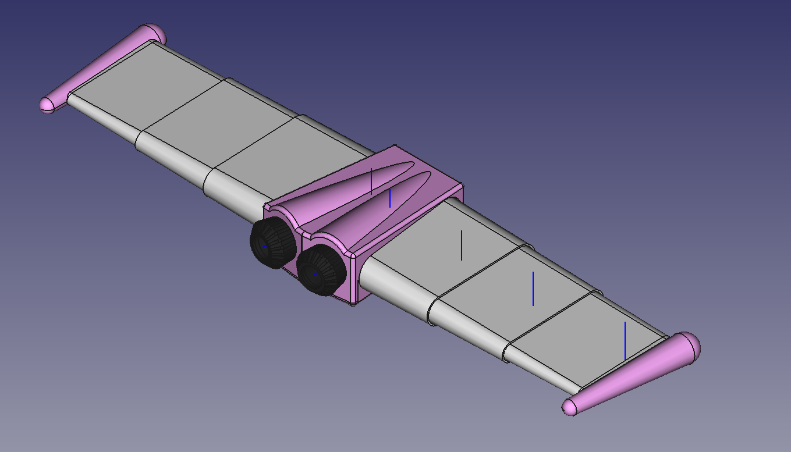
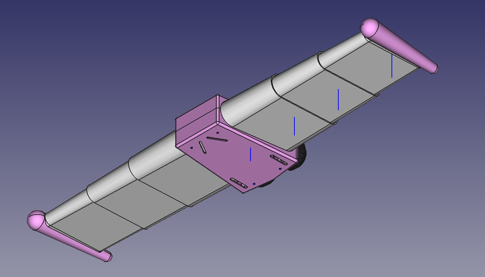
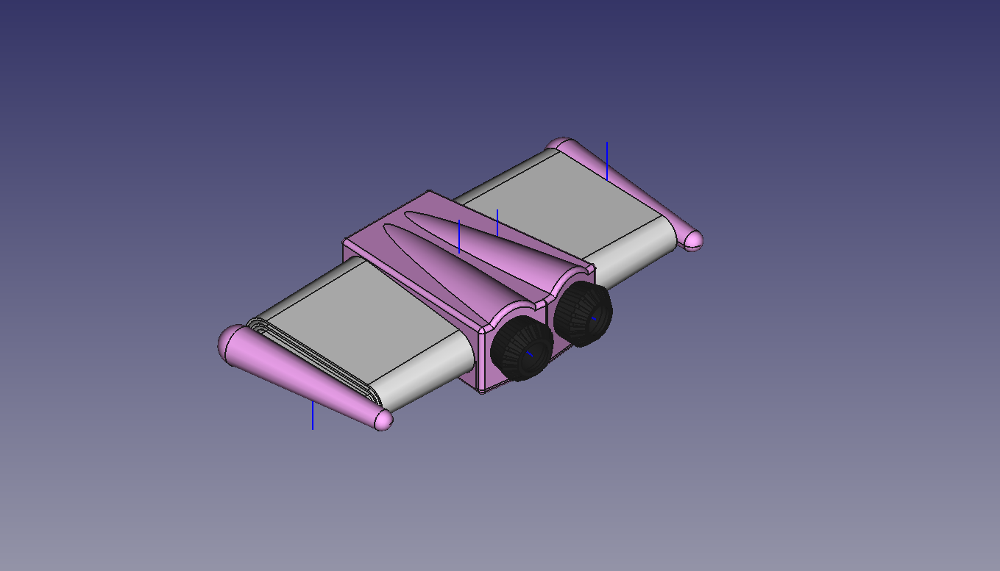

Jetpack Halloween costume for my daughter
4 minutes read •
Past month and a half my 4-year-old has been fixated with rockets and flying. At some point, I did the mistake of telling her to pretend our car was a rocket when we were going over a bridge. Now every time we're going up a hill or over speed bumps she demands I drive faster to get "lift-off".
Since rockets and flying was all she could talk about, I got inspired to make her a jetpack for Halloween. Like the one that Skye has in her favourite cartoon (Paw Patrol).
About a week later, I had finished the modelling in Freecad.



The plan was to add straps to it and wear it like a backpack. And if time allowed, add some LEDs into the thrusters for some light effects.
Let the printing begin!
I had some old white PLA around, which I wanted to use up. That meant I had to budget time for the post-processing, I had about 2 weeks until Halloween. Seemed doable. Even when considering I hadn't really done any post-processing of 3D prints before. I planned for 2 coats of primer, and ideally 2 coats of paint.
The circular LEDs from AliExpress arrived suprisingly fast. I had only managed to print out about half of the pieces by that time. So, I dug out some Rasperry Pi Picos I had bought in bulk a few years before and started figuring out the light show.
Once the lights were sorted, printing of all the pieces had also finished. I could get started with the post-procesing.
Sand, prime, repeat...
I started sanding, but quickly decided to switch to wet sanding, as there was too much plastic particles that were just getting gumbled up with the heat generated. This decision meant, that I had to also put aside time for the pieces to dry completely. I was already getting concious of the time that I had left. I thought, I'd speed up the drying process a bit, by chucking the sanded pieces into my filament dryer for a bit. Only later I would come to learn of my hubris.
Everything seemed to go well, but without prior experience doing this, I had no idea if I was right or if it was just wishful thinking. I did know that I would get a definitive answers once the first paint layer went on.

I applied the first layer of primer, and waited it to dry.
For some reason I had picked up transparent primer for this. I guess, I thought it wouldn't matter much, as the layer lines would be filled in regardless of what color it was. As soon as I started sanding again, I realised it would've been immensly helpful to see how much of the primer was being sanded off.
Having finished the 2nd sanding pass, I again threw the pieces into my filament dryer for a bit. When I took them out, I noticed something.
Oh, ****!
Upon closer inspection, I realised what I was seeing. I had screwed up... bad! The pieces were deformed. All of the previous days of work, down the drain.
I knew there was no way I could use these pieces for the final costume anymore, but I still wanted to see how well I had done with my sanding. Instead of applying the 2nd layer of primer, as I had planned, I painted them instead.
Once the paint had dried, I saw that my sanding hadn't been that great either. Even if they hadn't gotten bent in the dryier, I most likely wouldn't have been happy with the outcome.

Plan B?!
I still had 4 days until Halloween. I had to figure something out. My daughter was already well aware what I was working on, so not delivering wasn't an option. I didn't have time or motivation to do post-processing again. Which left me with one option - getting new filament in correct colors.
I ordered black and pink filament off of Amazon, and luckily they managed to deliver it the next day. I started printing everything again. After 48 hours of non-stop printing, it was done.
Halloween of 2024 was saved.